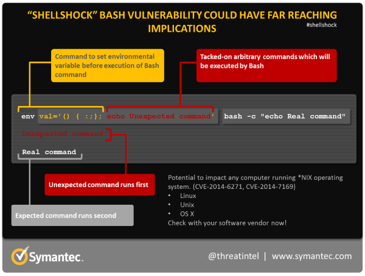

Shellshock (CVE-2014–6271)⚡ Here’s what you need to know:
Table of Contents
What is Shellshock?
Shellshock, also known as Bashdoor, is a family of security bugs in the Unix Bash shell, the first of which was disclosed on 24 September 2014. One of the biggest risks involving Shellshock is how easy it is for hackers to exploit. Using only a few lines of code, hackers can potentially give commands to the hardware they’ve targeted without having any authorization or administrative access. Estimates put the total number affected at around 500 million servers in total. On 12 September 2014, Stéphane Chazelas informed Bash’s maintainer Chet Ramey of his discovery of the original bug, which he called “Bashdoor”. Working with security experts, Mr. Chazelas developed a patch (fix) for the issue, which by then had been assigned the vulnerability identifier CVE-2014–6271.
How can it be exploited?
While the vulnerability potentially affects any computer running Bash, it can only be exploited by a remote attacker in certain circumstances. For a successful attack to occur, an attacker needs to force an application to send a malicious environment variable to Bash.
The most likely route of attack is through Web servers utilizing CGI (Common Gateway Interface), the widely-used system for generating dynamic Web content. An attacker can potentially use CGI to send a malformed environment variable to a vulnerable Web server. Because the server uses Bash to interpret the variable, it will also run any malicious command tacked-on to it.

Oh, that’s scary — what exactly can a hacker can do with this bash thingy? On a scale of 0 to 10 (according to CVSS scoring), this vulnerability has been rated a 10. A hacker can insert something called “environment variables” while the execution happening on your shell. What that means is, a hacker can enter your system, download your entire hard disk on his computer, delete your data, monitor your keystrokes, listen to your microphone and see your web camera.
Impact and Potential IoCs that can be exploited
The following are the indicators that your server can be exploited –
- GNU Bash up to version 4.3,
- OpenSSH through ForceCommand, AcceptEnv, SSH_ORIGINAL_COMMAND, and TERM,
- Scripts executed by DHCP clients that are not specified,
- Apache HTTP server via themod_cgi and mod_cgid modules, and
- Other situations wherein setting environment occurs across a privilege boundary from Bash execution.
Patches
Until 24 September 2014, Bash maintainer Chet Ramey provided a patch version bash43–025 of Bash 4.3 addressing CVE-2014–6271, which was already packaged by distribution maintainers. On 24 September, bash43–026 followed, addressing CVE-2014–7169. Then CVE-2014–7186 was discovered. Florian Weimer from Red Hat posted some patch code for this “unofficially” on 25 September, which Ramey incorporated into Bash as bash43–027. These patches provided code only, helpful only for those who know how to compile (“rebuild”) a new Bash binary executable file from the patch file and remaining source code files. On 1 October 2014, Michał Zalewski from Google Inc. finally stated that Weimer’s code and bash43–027 had fixed not only the first three bugs but even the remaining three that were published after bash43–027, including his own two discoveries. This means that after the earlier distribution updates, no other updates have been required to cover all the six issues. All of them have also been covered for the IBM Hardware Management Console.
Thanks for reading this post, if you like my work you can support by buying me a pizza. 🍕